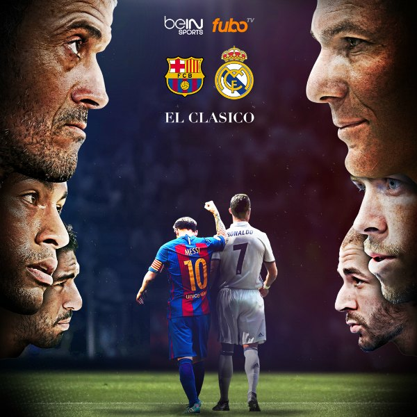
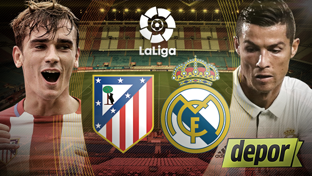

Real Madrid
Real Madrid Club de Fútbol commonly known as Real Madrid, or simply as Real, is a professional football club based in Madrid, Spain.Founded in 1902 as Madrid Football Club, the club has traditionally worn a white home kit since inception. The word Real is Spanish for Royal and was bestowed to the club by King Alfonso XIII in 1920 together with the royal crown in the emblem. The team has played its home matches in the 81,044-capacity Santiago Bernabéu Stadium in downtown Madrid since 1947. Unlike most European sporting entities, Real Madrid's members have owned and operated the club throughout its history.The club was estimated to be worth €3.24 billion ($3.65 billion) in 2015, and in the 2014–15 season it was the world's highest-earning football club, with an annual revenue of €577 million.The club is one of the most widely supported teams in the world. Real Madrid is one of three founding members of the Primera División that have never been relegated from the top division, along with Athletic Bilbao and Barcelona. The club holds many long-standing rivalries, most notably El Clásico with Barcelona and El Derbi with Atlético Madrid.Real Madrid established itself as a major force in both Spanish and European football during the 1950s, winning five consecutive European Cups and reaching the final seven times. This success was replicated in the league, where the club won five times in the space of seven years. This team, which consisted of players such as Alfredo Di Stéfano, Ferenc Puskás, Francisco Gento and Raymond Kopa, is considered by some in the sport to be the greatest team of all time.
Barcelona

El Clásico is the name given in football to any match between fierce rivals Real Madrid and FC Barcelona. Originally it referred only to those competitions held in the Spanish championship, but nowadays the term has been generalized, and tends to include every single match between the two clubs: UEFA Champions League, Copa del Rey, etc. Other than the UEFA Champions League Final, it is considered one of the biggest club football games in the world, and is among the most viewed annual sporting events. It has always been a heated match, from both sides.The rivalry comes about as Madrid and Barcelona are the two largest cities in Spain, and they are sometimes identified with opposing political positions, with Real Madrid viewed as representing Spanish nationalism and Barcelona viewed as representing Catalan nationalism. The rivalry is regarded as one of the biggest in world sport. The two clubs are among the richest and most successful football clubs in the world; in 2014 Forbes ranked them the world's two most valuable sports teams. Both clubs have a global fanbase; they are the world's two most followed sports teams on social media.Real Madrid leads the head to head results in competitive matches with 93 wins to Barcelona's 91, while Barcelona leads in total matches with 110 wins to Real Madrid's 97. Along with Athletic Bilbao, they are the only clubs in La Liga to have never been relegated.
Atletico de Madrid

El Derbi madrileño (English: The Madrid Derby) is the name given to football matches between Real Madrid and Atlético Madrid, both of them from Madrid, Spain.During the early Francoist period, it was Atlético that was the preferred team of the regime, being associated with the military airforce, until the regime's preferences moved towards Real Madrid in the 1950s. Franco sought to make political capital out of Real Madrid's European Cup titles at a time when Spain was internationally isolated; said one minister, "Real Madrid are the best ambassadors we've ever had." Thus, Atlético fans regularly chanted that Real was "el equipo del gobierno, la vergüenza del país" — the team of the government, the shame of the country — and allegedly adopted a more left-wing slant (tempered by the rise of ultras culture, and Rayo Vallecano's presence as the "true" leftist club in Madrid).